| 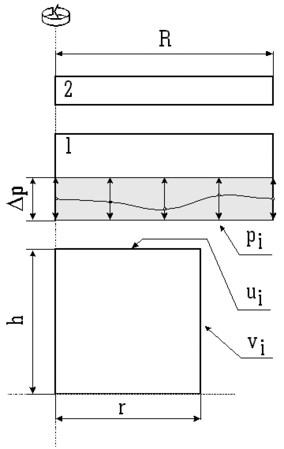 | Measures:
cylinder radius: r=50 mm cylinder height: h=50 mm tools radius : R=75 mm optimization zone: Dp=15 mm ui: contact surface control p. coordinates vi: free surface control p. coordinates pi: tool 1 control p. y-coordinates
|
Figure 1: Tools and workpiece(cylinder) geometry
The deformation is modeled by Von Mises elasto-plastic material model.
The contact friction is modeled by Coloumb's law. Material properties of
the workpiece are summarised in Table 1.
Table 1: Material properties
| Density | 2710 | [kg/m3] |
| Young's module | 71000 | [MPa] |
| Plastic yield | 100 | [MPa] |
| Poisson's ratio | 0.34 | [/] |
The criterion for the efficiency of the forming process is defined by the following objective function:
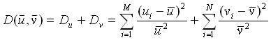 (1)
ui are the coordinates of the control points on the contact surface of the workpiece, vi are the coordinates of the control points on the free surface of the workpiece. The average values of these coordinates are 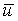 and 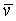.
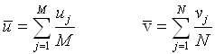 (2)
In our case the shape of the tool is defined by five control points. The contact surface of the tool between the control points is interpolated by splines of the 3rd order. Shape parameters pi are y-coordinates of the control points in the local coordinate system of the tool. The optimization zone has a finite width so we must introduce a transformation function that maps parameter values from the interval [-¥,¥] to a finite interval [pmin , pmax].
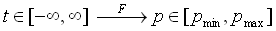 (3)
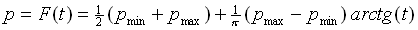 (4)
The value of the objective function depends on the workpiece surface control points coordinates ui and vi. Presumably these coordinates depend on the optimization parameters pi. We don't know the explicit dependence, but in spite of that we can intuitively establish that the objective function is an implicit function of the optimization parameters pi.
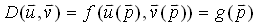 (5)
With the optimization algorithm we try to find the global minimum of the objective function D with respect to shape parameters pi. Optimization is an iterative process. It consists of successive simulations of the forming at the parameters calculated from the results of the previous simulations.
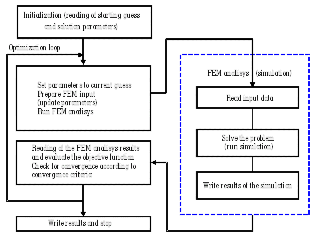
Figure 2: Optimization scheme
| p1 | p2 | p3 | p4 | p5 | p6 | Du | Dv | D | Iter. | |
| a | 1 | 1 | 1 | 1 | 1 | 2/3 |
1.063E-04
|
7.927E-03
|
8.033E-03
|
- |
| b | 1 | 0.93 | 0.75 | 0.57 | 0.5 | 2/3 |
9.331E-05
|
3.821E-03
|
3.914E-03
|
- |
| c | 0.50665 | 0.99284 | 0.99170 | 0.53944 | 0.5090 | 2/3 |
1.67E-04
|
2.61E-04
|
4.28E-04
|
61/145 |
| d | 0.50686 | 0.99197 | 0.99225 | 0.83228 | 0.51019 | 0.8326 |
1.30E-04
|
1.49E-05
|
1.44E-04
|
95/237 |
a)
| 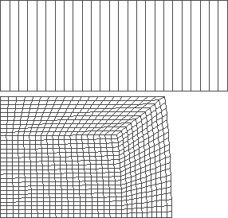 | 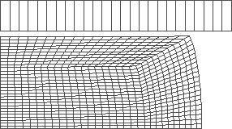 |
Figure 3: forging with flat tools
Mean value of the final radius: r = 64.06 mm
Mean value of the final height: h = 30.306 mm
The value of the objective fn.: D = 8.033 10-3
b)
| 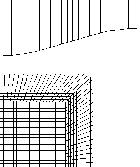 | 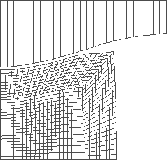 | 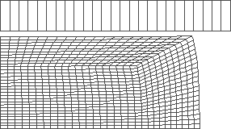 |
Figure 4: forging with intuitively set shape of the tool (tool stroke 20 mm)
Mean value of the final radius: r = 63.883 mm
Mean value of the final height: h = 30.518 mm
The value of the objective fn.: D = 3.91 10-3
c)
| 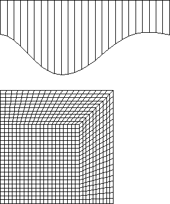 | 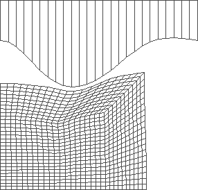 | 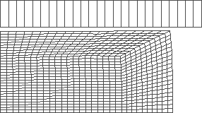 |
Figure 5: forging with optimized shape of the tool at prescribed tool stroke (20 mm)
Mean value of the final radius: r = 63.991 mm
Mean value of the final height: h = 30.472 mm
The value of the objective fn.: D = 4.28 10-4
d)
| 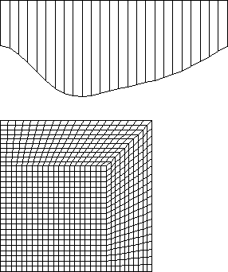 | 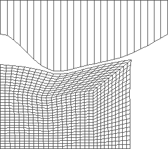 | 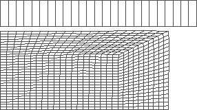 |
Figure 6: forging with optimized shape and stroke of the tool
Mean value of the final radius: r = 64.372 mm
Mean value of the final height: h = 30.127 mm
The value of the objective fn.: D = 1.44 10-4
Optimal stroke : s= 24.978 mm